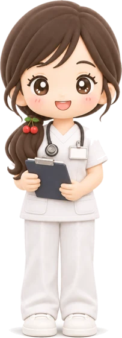
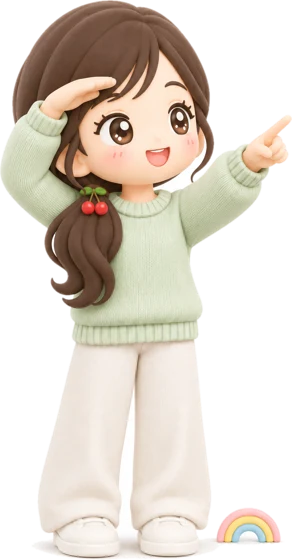
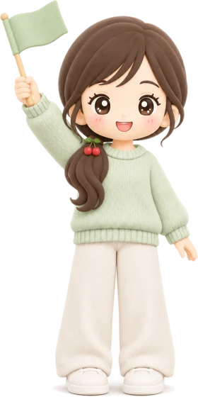
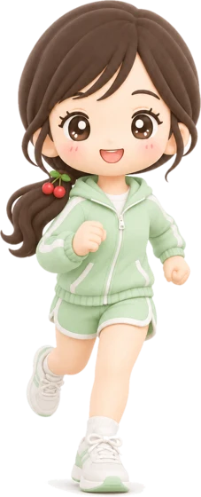
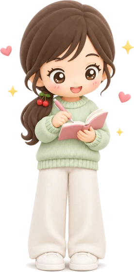
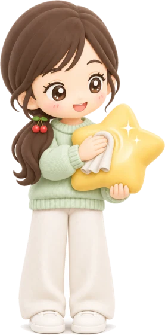
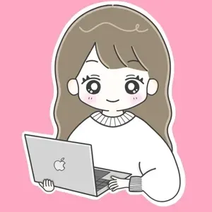
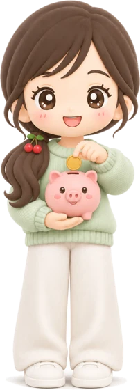

場面 その1
未来を言葉にする
「数年後に結婚して韓国へ移住」「日本でも韓国でも働けるスキルを」。プロフィールには、行き先がはっきり書いてあります。未来の姿が具体的だから、今やることも決まります。
ぼんやりした夢を、行き先の地図に変える。
ちょるさんジャーナリングで夢を叶える人🌈
営業から自分らしいギフトを見つける ／ 展開編 その2
ストレングスファインダーの資質は、言葉だけだとピンときにくいもの。ちょるさんの上位資質の組み合わせと、ご本人が公開している言葉から、強みがどんな場面で働いていそうかを見立ててみました。答え合わせは、ぜひご本人と。


1〜3位と10位はご本人が話してくれた順位。ほかは上位10に入っている資質（順不同）です。ちなみに34位は原点思考。
ちょるさんって、こんな人
まず、ひと目で
エンジンは「未来のわたし」。
学ぶ、未来を描く、目標に落とす、毎日続ける。上位の資質が、ひとつの道筋のようにつながっています。この並びから見立てると、ちょるさんの行動力は「こうなりたい未来」がはっきり見えた時に、いちばん大きく動くタイプだと考えられます。
書いたら叶う、じゃなくて、書いて叶えに行く

未来志向は「こうなったらいいな」という未来の姿にわくわくする資質。目標志向は、行き先を決めて、そこへまっすぐ進む資質。この2つが上位で並ぶと、夢が「いつか」で終わりません。ちょるさんの言葉を読むと、3つの場面に出ていそうです。

「数年後に結婚して韓国へ移住」「日本でも韓国でも働けるスキルを」。プロフィールには、行き先がはっきり書いてあります。未来の姿が具体的だから、今やることも決まります。
ぼんやりした夢を、行き先の地図に変える。

ノートは3冊（日々・価値観・未来）。月末に1年の目標を見て、来月の目標を立てる。収入の6〜8割を貯蓄・投資に回せるのも、行き先から逆算しているからこそ。
遠い未来と、今日の一歩をつなぐ仕組みを持っている。

note、ライブ配信、会社のお手伝い。実際にやってみることで見えてくることがたくさんあって、毎日が新鮮。学習欲と達成欲が、知るだけで終わらせません。
未来へ近づく道を、試しながら見つけていく。
ちなみに34位は「原点思考」。原点思考は、過去をふりかえって「どうしてこうなったか」から考える資質です。ちょるさんはちょうど反対側。目線が自然と「これから」に向いている人だと言えそうです。
資質のリレーで見ると
ちょるさんの上位資質を並べると、夢を叶えるまでの道のりに、そのまま当てはまります。

韓国、お金、看護、副業。気になったことは調べ始めると止まらない。情報も経験も、まず集めてみる。
興味があちこちに飛ぶのは、引き出しが増えている証拠。

集めたものを書きながら、「これからどんな人生を送りたいんだろう？」を考える。未来のノートに、行き先を書く。
ひとりで静かに考える時間が、未来をはっきりさせる。
1年の目標から、来月の目標へ。たくさんある興味の中から、いま進む道を選びとる。
選ぶ時の基準は「もっと良くなるのはどっち？」。

毎日の4つの問い、ノートの使い分け、毎月の貯蓄。決めたことを、毎日の型にして回していく。
続く仕組みがあるから、忙しい看護の仕事と両立できる。

できたことを数えて、昨日の自分を超えていく。「今月中に」のように、区切りや物差しがあると燃えるタイプ。
勝つ相手は、昨日のわたし。
資質を、1枚ずつ

学ぶこと、上達していく過程そのものが好き
「こうなったらいいな」という未来に、わくわくする
行き先を決めて、そこへまっすぐ進む
決まった型や習慣があると、力が出る
比べる物差しがあると、燃えて力が出る
情報や物、経験を集めて、ためておきたい

良いものを、さらに最高のものへ磨きたい

ひとりで考える時間を楽しみ、考えを深める

毎日なにかをやり遂げると、満たされる
ますまるさんと並べると
燃料は「未来のわたし」
行き先が見えると動き出す。型を作って、ひとりでも続けられる。

燃料は「目の前のこの人」
良くなってほしい誰かがいると動き出す。人と一緒だと、力が何倍にも。
数字は上位10のうち、その領域に入る資質の数。ちょるさんはご本人が話してくれた9つで数えています。どちらが良い悪いではなく、力が出る条件が違うということです。
強みの、裏側も
ここは資質の組み合わせから見た、一般的な傾向です。当てはまるかどうかは、ご本人に聞いてみてください。
達成欲と規律性が高い人は、毎日なにかを進めていないと落ち着かず、休むことを後回しにしやすい傾向があります。
休む日も「予定」として、先にノートに書いておく。

未来志向と目標志向がそろうと、今日の楽しみを未来のために削りすぎることも。ご本人も「使う力も伸ばさねば」と書いています。
「今のわたしが喜ぶこと」も、目標のひとつに入れる。
内省が高く、人間関係構築力が上位にない人は、ひとりで考えて決めることが多くなりがち。
オフ会のように、話して分かち合う場を予定に入れる。
ここから、あなたの番